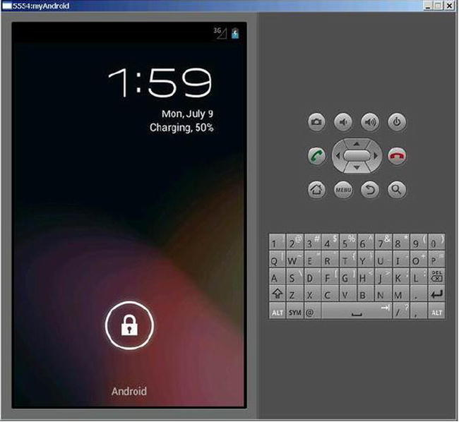

At the heart of all compute devices is the operating system, or OS. Development and execution of application software are based on the OS and the software platform as a whole. In this chapter, you learn about the Android OS—the recommended software platform for Intel Atom-based machines—to build your competence for subsequent development of embedded applications.
Android Overview
Android is a comprehensive operating environment based on the Linux kernel (in 2014, Kernel version 3.10.x has been used by major OEMs). Initially, the deployment target for Android was the mobile phone category, including smartphones and lower-cost flip-phone devices. However, Android’s full range of computing services and rich functional support have the full potential to extend beyond the mobile phone market for use on other platforms and applications, such as tablets.
In addition to the kernel, the Android OS for x86 requires some drivers and technologies, including those commonly found on mobile devices:
- USB driver for host and client
- Video driver for video encode as well as decode
- Display and graphics: 2D and 3D rendering; planes, pipes, ports
- Flash memory driver
- Camera driver: usually a Linux-based v41 (video for) driver
- Audio driver: usually an Advanced Linux Sound Architecture (ALSA) based advanced Linux (sound system) driver
- Near field communication (NFC)
- Wi-Fi Driver: IEEE 802.11-based driver
- Keyboard driver
- Security (DRM, trusted boot, and so on)
- Bluetooth driver
- Binder IPC: a special driver of Android, with separate device nodes to provide inter-process communications (IPC) functions
- Power management: drivers for three different CPU Standby states: Active Stand-by (S0i1), Always On Always Connected (AOAC) Stand-by (S0i2), and Deep Sleep Stand-by (S0i3)
With Android’s breadth of capabilities, it would be easy to confuse it with a desktop OS; Android is a layered environment and includes rich functions.
Android applications are generally written in the Java programming language and can include many different kinds of resource files (in the res directory). An APK package is generated after the Java program and other related resources are compiled. Google also provides support for multiple APK files. This is a feature of Google Play that allows developers to publish different APKs for the application that are each targeted to different device configurations. Android offers many core applications including Home, Contact, Phone, and Browser. In addition, you can use the APIs in the application framework layer to develop your own applications.
The Android UI subsystem includes
- Windows
- Views
- Widgets for displaying common elements such as edit boxes, lists, and drop-down lists
It also includes an embeddable browser built on WebKit, the same open source browser engine powering the Apple iPhone’s Mobile Safari browser.
Android boasts a healthy array of connectivity options, including Wi-Fi, Bluetooth, and wireless data over a cellular connection (for example, GPRS, EDGE, 3G, and 4G/LTE). A popular technique in Android applications is to link to Google Maps to display an address directly within an application. Support for location-based services (such as GPS) and accelerometers is also available in the Android software stack, although not all Android devices are equipped with the required hardware. There is also camera support. Historically, two areas where mobile applications have struggled to keep pace with their desktop counterparts are graphics/media and data-storage methods. Android addresses the graphics challenge with built-in support for 2D and 3D graphics, including the OpenGL ES library. The data-storage burden is eased with the popular open source SQLite database included on the Android platform.
Android Architecture
A simplified block diagram of the Android software architecture is shown in Figure 5-1.
Figure 5-1.
Android software architecture
As mentioned, Android runs on top of a Linux kernel. Java-based applications are run within a virtual machine (VM). It’s important to note that the VM is not a JVM, as you might expect, but is the Dalvik virtual machine (DVM), an open source technology. Each Android application runs within an instance of the DVM, which in turn resides within a Linux kernel–managed process, as shown in Figure 5-2.
Figure 5-2.
Android application operation layer
Starting with Android KitKat 4.4, Google has implemented the new Android Run Time (ART), which is also called Dalvik version 2. ART is under active development in the Android Open Source Project (AOSP) master, and future 64-bit versions of Android will be based on ART. You can find the latest information about ART at
https://source.android.com/devices/tech/dalvik/art.html
.
Basic Android Functionality from a Programming Perspective
Android is a version of Linux. This section recaps some basic Linux commands and common practices for Android developers with two scenarios: one based on the Android emulator provided in the Android SDK and the other for developers who own a real Android smartphone or tablet with Intel inside it (in the examples, the Lenovo K900 smartphone). If you are an experienced Android/Linux developer, you can safely skip the rest of this chapter and move to the next chapter.
Android System Interface
The Android mobile system interface is a key aspect in which major manufacturers differ. Personalized system interfaces are not only a selling point, but also a platform for mobile phone users to communicate with their friends. This section uses the Lenovo K900 smartphone as an example to discuss Android system UI design. The four-leaf clover design used by Lenovo K900 is shown in Figure 5-3.
Figure 5-3.
Lenovo K900 main interface
The Lenovo phone adopts the conventional “slide up to unlock” mode, which is simple and convenient. The shortcuts in the main interface can be changed by long-pressing a leaf, as shown in Figure 5-4. It’s worth noting that during the main interface operation, the shortcut-setting option does not appear if you click the menu key, as on some other Android phones. In addition, you cannot add or delete the home screen (the shortcuts in leaves can be changed).
Figure 5-4.
All Menu interface
The Lenovo phone’s drop-down menu is personalized and includes four options: Notification, Switch, Call, and Message. In the Switch interface, you can make quick settings for the mobile phone or long-press an option to enter the option’s detailed settings interface.
Some Android phones allow you to add widgets and shortcuts when you long-press any blank space on the interface, but the Lenovo phone doesn’t have this function. You can use the menu key to add tools and shortcut keys (except the )home screen. When you press the screen with two fingers, the multiscreen interface appears where you can perform a quick search, as shown in Figure 5-5.
Figure 5-5.
Multiscreen interface of the Lenovo phone
The menu interface in 20-rectangle-grid design is fashionable and elegant, but some icons are blurred.
The main hardware and OS configuration information of the Lenovo K900 phone are shown in Figure 5-6.
Figure 5-6.
Parameters of the Lenovo K900 phone
Terminating an Application in Android
Android offers three different methods to terminate an application, as described in the following sections.
Method 1 (for Real Devices)
1.
Select the following options in the mobile device menu: Settings ➤ Applications ➤ Running Services ➤ Running Applications. The applications that are executing are shown. This list may vary on different devices. For example, on the Samsung Galaxy Note, Applications is replaced with Application Manager, and on the Dell Venue (Android KitKat 4.4), it is replaced with Apps.
2.
Click the application to delete from the list, and the Force Quit and Uninstall buttons pop up on the screen. Click Force Quit to terminate the process.
Method 2
Press Return when the application occupies the current top-level window screen (that is, the application is running).
Method 3
Terminate the process in the Dalvik Debug Monitor Server (DDMS)on a host system. This can be achieved when the Android device is connect to a host system that has an IDE with an Android SDK that supports DDMS, such as Eclipse.
Using the Web Browser in the Android Emulator
If you have a smartphone, there is no doubt that you can connect to the Internet easily. If you are running Android on an emulator, you can follow these steps to use the web browser:
1.
Click the Home button on the keyboard, and the interface shown in Figure 5-7 appears. Click the bottom-right button.
Figure 5-7.
Web browser startup interface
2.
The web browser window pops up. Click the address bar to bring up the keyboard on the emulated device, as shown in Figure 5-8. Input the address on the emulated keyboard, and then click Go.
Figure 5-8.
Web browser initial interface
Common Linux Commands and Operations
Because Android is based on Linux, Android supports most Linux commands. The following sections present some common Linux commands that are supported on an Ubuntu system–based host machine and an Android system–based target machine. If you are using a Windows host system to develop applications for Android, you can use the Android Debug Bridge (adb) command provided by the Android SDK to connect to an Android device or emulator to run these commands.
Check Users
The following command checks the current logged-in user’s name:
$ who am i
or
$echo $USER
The following command displays username information:
$ id
uid=1000(cereal) gid=1000(cereal)
groups=4(adm), 20(dialout), 24(cdrom), 46(plugdev), 106(lpadmin), 121(admin), 122(sambashare), 1000(cereal)
The output data shows the current user is cereal, the user ID is 1000, the user belongs to the cereal group, the group ID is 1000, and so on.
Changing a Password
The following command changes the current user’s password:
$ passwd
Here is the output:
Changing password for cereal.
(current) UNIX password:
Enter New UNIX password:
Retype New UNIX password:
Password changed
The passwd command can also be used to change the Rootpassword. For example, if you log in with the username cereal, you can use the following command to set the password of the root user:
$ sudo passwd root
In desktop Linux, a login window usually appears as the system starts, requiring you to enter the username and password. But Android doesn’t have this process. Android automatically logs in using the default username and password, which are invisible to the user; the system resources are used under the user’s identity.
If the password of the root user is uncertain after Android installation, you can set it as shown earlier using the passwd root command. sudo means the command is executed under the root identity, but execution of the command only requires confirmation by inputting the password of an ordinary user.
Clearing the Screen
You can use the clear command to clear the screen:
$ clear
Superuser Root Operation
Linux has a unique superuser root (different from multiple superusers for Windows), which can access all files and directories and operate all applications in the system. Use the su command to enter the root user account:
$ su
Then, enter the root user’s password. After you enter the root user account, the command-line prompt changes from $ to #. If the su command is not followed by any parameter, the default is to switch to the root user but not the root user’s home directory—that is, the root login environment is not changed after the switch. It is still the default login environment. When a parameter is entered, the root user as well as the environment of the root user are changed:
$ su -
Use the exit command to exit the root user account and return to the ordinary user identity:
#exit
After exiting, the command line prompt changes from # to $.
When you enter the root user account with the su command, subsequent operations are made under the root identity. To execute the current command under the root user identity and return to the ordinary user identity after the execution of the command, add the prefix sudo before the command, as shown earlier. As sudo is executed, the system asks you to enter the password of the current user (not the root user) to confirm the identity.
Theoretically, an ordinary user doesn’t necessarily have sudo permissions; the permissions are specified in the document /etc/sudoers. In desktop Linux, this should always be edited or set via commands such as visudo. But in Android, the default is that the installer has sudo permissions.
Displaying Files and Directories
You use the ls command to display directory and file information. The common format of ls is as follows:
ls [-l] [<directory name>]
Here, ls -l shows file or directory, size, modified date and time, file or folder name and owner of file and it’s permission. By default, the information of the current directory is displayed. For example (the current directory is /home/cereal):
Changing and Displaying the (Current) Directory
Use the cd command to change the current directory. For example, to change the current directory to \embedded\pkgs, input the following command (note that the root directory and directory are separated by / in Linux):
$ cd /home/cereal/Document
This path, beginning with / to indicate the directory, is called an absolute path.
If the current directory is /home/cereal, the relative path can be used:
$ cd Documents
If no parameters are entered, the cd command changes to the home directory of the current user:
$ cd
.. means the parent directory, accessed with the following command:
$ cd ..
Use the pwd command to display the absolute path name of the current directory:
$ pwd
/home/cereal
There are also symbols to represent special directories in Linux. For example, ∼ indicates the user’s home directory, so you can use the following command to go to the home directory:
$ cd ∼
Searching for Files
Use the find command to search for files. The format of the command is
find directory name -name file name
You can search for specified files in the specified directory and all child directories. For example, input the following command to search for ifconfig files in the entire file system:
# find / -name ifconfig
This command starts at the root directory and searches for ifconfig files under all subdirectories. The command accesses all directories, many of which are not accessible to an ordinary user, so it’s recommended that you execute this command under the root identity.
File Operation
Android has file-operation commands similar to those in Windows. The commands are listed in Table 5-1.
Table 5-1.
Android File-Operation Commands
Command | Function | Format | Format description |
|---|---|---|---|
cat
| Show file contents |
cat [-n] <file list>
|
n: Show the line number. |
ln
| Establish a hard/soft link |
ln [-sf] <original file><destination file>
|
s: Soft link; the default is hard link. f: The destination file, if it exists, will be replaced |
mkdir
| Make a directory |
mkdir <directory name>
| Create a directory with given name |
rmdir
| Delete an empty directory |
rmdir <directory name>
| The directory to be deleted must be empty. To delete a non-empty directory, use the following command:
rm –rf <directory name>
|
cp
| Copy a file |
cp [option] [<source path>]<source file> <destination path>[<destination file>]
| Copy SOURCE to DEST, or multiple SOURCE(s) to DIRECTORY |
mv
| Move and rename a file |
mv <source file> <destination file>
| Rename SOURCE to DEST, or move SOURCE(s) to DIRECTORY. |
rm
| Delete a file |
rm [option] <file name>
|
-i: Ask whether to delete.
-f: Don’t ask whether to delete.
-r: Recursively delete the entire directory, like rmdir. |
cmp
| Compare files |
cmp <file 1> <file 2>
| Compares two files of any type and writes the results to the standard output. |
For example, you can use the following command to display the contents of the /etc/passwd file:
$ cat /etc/passwd
Use the following command to copy the /etc/passwd file to the current directory:
$ cp /etc/passwd .
The . in this command indicates the current directory.
Modifying File/Directory Permissions
As mentioned, every file or directory has its own permission. Only users with the corresponding permission can perform operations. The permission must be modified if it doesn’t match. Table 5-2 lists the Linux commands to modify file permissions.
Table 5-2.
File/Directory Permission-Modification Commands
Command | Function | Format |
|---|---|---|
chmod
| Change the file/directory access permission (only the file owner and root user can do this) |
chmod <octal digit>/<+/- w/r/x> <file name>
|
chgrp
| Change the file group |
chgrp <group name> <file name>
|
chown
| Change the file owner (only the root user can do this) |
chown <new owner> <file name>
|
For example, this command adds write permission for other users of the report.doc file:
# chmod o+w report.doc
In Linux, the owner, users in the same group, and other users are represented by u, g, and o, respectively. The previous command adds write permission for other users (o).
The next example sets the group permission of report.doc tp rw (deletes x permission):
# chmod g=rw report.doc
Permissions can also be represented by digits: the values for read, write, and execute are 4, 2, and 1, respectively. The digit of the allocated permissions is the sum of the three. For example, the following command sets the user permission of report.doc to rw (4 + 2 + 0 = 6), sets the group permission to r (4 + 0 + 0 = 4), and gives no permission for other users (0 + 0 + 0 = 0):
# chmod 640 report.doc
This command allocates report.doc to the managers groups:
# chgrp managers report.doc
To set the owner of report.doc to cereal and set its group to managers, you can use this command:
# chown cereal.managers report.doc
This command changes the owner of all files under the current directory to cereal:
# chown cereal *
Generally, only root users can use chown to change the owner of a file or directory.
In Windows, executability of a file is based on its suffix (such as .exe), but Linux doesn’t have any requirement for the name of an executable file and determines whether the file is executable by the file attributes In Android, to make a file executable or non-executable, you usually use the chmod command to add or delete permission to execute.
Many command functions, such as file operations and permission operations, are usually performed in a file explorer, text editor, or other graphical user interface application. But with command-line operations, you have a new way to perform commands quickly. Android doesn’t provide GUI applications such as a file explorer, so in most cases, you have to use the command line to complete those functions.
Working with the Executable File Path
If a path is not specified for an executable file, Linux can find the file with the path it saved in the system variable PATH, also called the default path or path. By default, Windows finds executable files in the current directory, but Linux only finds executable files in their default paths. So, you can use the following command to execute the executable file under the current directory:
./directory name of executable file
The following command shows the current path:
$ echo $PATH
You can also use the which command to find out whether the directory of an executable file has been included in the default path. For example, the following command finds out whether the gcc directory has been included in the default path:
$which gcc
If it is present in the default path, this command outputs the directory of the executable file: for example, /usr/bin/gcc. Otherwise, the command outputs nothing.
To add a directory in the default path, you can use the following command:
$ PATH=$PATH:/tools/bin
$ export PATH
or
$ export PATH=$PATH:/tools/bin
Add a /tools/bin path under PATH with : as the separator. Changing the PATH value or any environment variable must be exported through export; otherwise, the new PATH value will not take effect. This works only for the current user.
The export command can be added to shell files such as .bash_profile, .profile, and .bashrc so the command is executed before the command line starts each time.
A simple way of executing executable files without modifying the default path is to specify the absolute path before the executable file name.
Piping and Screening
The Linux pipe operation symbol | takes the output of one command as the input of the second one. Its function is the same as in Windows. For example, you can use the following command to show file content screen by screen:
$ cat /etc/passwd | more
The more command shows files screen by screen, suspending execution after each page of output; you tell it to continue by pressing any key. In the previous command, cat/etc/passwd means to output the content of the passwd file, and the output is used as the input (using the pipe command) of the more command.
The grep command can search and display certain lines in a file. For example:
$ grep cereal /etc/passwd
This command finds and displays lines containing “cereal” in the passwd file. The output is like this:
cereal:x:1000:1000:cereal,,,:/home/cereal:/bin/bash
The string to search can be enclosed with single quotes ('') or double quotes (""). The text in '' is taken literally, whereas some special characters in "" are given special meaning by the shell. The previous command can also be written in these forms:
$ grep 'cereal' /etc/passwd
and
$ grep "cereal" /etc/passwd
In most cases, you use the pipe and grep commands to show screens of command output. For example:
$ ls -l /home/cereal/Document | grep qt
This command shows the corresponding line of the file/directory containing the qt field in the /home/cereal/Document directory.
Another command you have used is
$ ps -e | grep ssh
which lists all active processes containing the text “ssh” in the process name.
Running Commands in the Background
The execution of commands usually occupies the input/output of the console or the command-line window, which means you cannot input a command before the one that is executing ends. In contrast, if an application runs in the background, the console’s input/output is not occupied. To run a command in the background, simply add & to the end of the command.
Interrupting the Execution of Commands in the Foreground
Press Ctrl+C to interrupt commands executing in the foreground. For example, the Linux ping command will endlessly ping a host, but you can end its execution as follows:
$ ping 127.0.0.1
PING 127.0.0.1 (127.0.0.1) 56(84) bytes of data.
64 bytes from 127.0.0.1: icmp_seq=1 ttl=64 time=0.027 ms
64 bytes from 127.0.0.1: icmp_seq=2 ttl=64 time=0.028 ms
64 bytes from 127.0.0.1: icmp_seq=3 ttl=64 time=0.029 ms
64 bytes from 127.0.0.1: icmp_seq=4 ttl=64 time=0.030 ms
64 bytes from 127.0.0.1: icmp_seq=5 ttl=64 time=0.031 ms
^C
--- 127.0.0.1 ping statistics ---
5 packets transmitted, 5 received, 0% packet loss, time 4462ms rtt min/avg/max/mdev = 0.027/0.029/0.031/0.001 ms
$
After the fifth ping output item, the command was interrupted by pressing Ctrl+C, and the screen shows ^C.
Checking Hardware Information (Such as OS Version and CPU)
The uname command displays system information, including information related to the computer and OS. The syntax of the command is
uname [-amnrsv][--help][--version]
The parameters are as follows:
- -a (all): Show all information
- -m (machine): Show computer type
- -n (nodename): Show the host name on the network
- -r (release): Show the issue number of the OS
- -s (sysname): Show the OS name
- -v (version): Show the OS version
- --help: Show help
- --version: Show version information
For example, the following command shows the type of OS on the machine:
$ uname
Linux
The machine’s OS is Linux.
This command shows the issue number of the Linux kernel:
$ uname -r
2.6.31-14-generic
The issue number is 2.6.31-14.
Linux puts the processor information in the cpuinfo file in the /proc directory, allowing you to check this through the file. You can check the processor model with the following command:
$ cat /proc/cpuinfo | grep "model name"
The output on an Asus Eee PC 1000HC netbook is
model name : Intel(R) Atom(TM) CPU N270 @ 1.60GHz
model name : Intel(R) Atom(TM) CPU N270 @ 1.60GHz
The machine has an Intel Atom processor N270.
Now check the number of logical CPUs:
$ cat /proc/cpuinfo | grep "processor"
The output on an Asus Eee PC 1000HC netbook is
processor : 0
processor : 1
The processor has two logical CPUs.
The following command will displays the ID of each logical CPU:
$ cat /proc/cpuinfo | grep "core id"
The output on an Asus Eee PC 1000HC netbook is
core id : 0
core id : 0
The two logical CPUs have the same core ID, which means the hyperthreading of the processor is open—that is, the hyperthreading technology simulates two CPUs.
Using the Android Development and Auxiliary Tools
The following sections describe how to use emulator, help file, DDMS, (adb), and common Android and telnet commands.
Using the Emulator
Android Virtual Device (AVD), the Android emulator, is a good tool to run to debug mobile applications. Using AVD was briefly introduced earlier in the book, and this section provides a more in-depth discussion.
The emulator can be started using one of three methods.
Method 1
Start the emulator in Eclipse by following these steps:
Figure 5-9.
Emulator startup menu
2.
In the Debug Configuration box, select \Android Application\XXX in the left column, and then click Target ➤ “Automatically pick compatible device: Always uses preferred AVD . . . ”. Click the Start button on the right after checking the specified emulator.
Figure 5-10.
Launch Options information box
Figure 5-11.
Initial interface of the emulator when started separately
Method 2
To start the emulator while running the application in Eclipse, on the menu bar, select Window ➤ Android Virtual Device Manager (see Figure 5-12).
Figure 5-12.
The Android Virtual Device Manager
Sometimes, when this method is used, the interface locks up. That is to say, after running the project (application) in Eclipse, the emulator sometimes shows an interface like the one in Figure 5-13. The application’s interface is not visible, indicating the emulator is locked up.

Figure 5-13.
Interface when the emulator locks up at startup
The solution is to click the menu button. If a window pops up, click Wait To Continue, and the application’s interface will appear, as shown in Figure 5-14.
Figure 5-14.
Interface after unlock
Method 3
AVD configurations can also be created and managed from command line using “android” tool as discussed here:
http://developer.android.com/guide/developing/devices/managing-avds-cmdline.html
Example Creation of AVD from command line for Intel Architecture: avd create avd –n HC –t android-13 –s WXGA
Accept “yes” for custom hw and choose x86 for hw.cpu.arch propertyUsing the Help File
The Android development help file provides descriptions, explanations, and use examples for class and method prototypes involved in application development. You can read the help file either online, or offline as local files. The online reading function is more powerful because it supports auto-complete and search of class names. However, depending on the network speed, online reading may not be as responsive as offline reading. The two methods are explained next.
When you use Android SDK Manager (by selecting Window from the top menu in Eclipse) to download the Android packages, you see Documentation for Android SDK in each package. After you select and install it, all documents are copied into the docs folder, which is the subdirectory of the android-sdk installation directory in your system. The local help file is accessed through the index.html file in the docs. To use local help files, follow these steps:
1.
Open the index.html file under the docs subdirectory of the android-sdk installation directory (in this case, D:\Android\android-sdk\docs\index.html). In the browser window, an information bar asking to run ActiveX may pop up. Click to run the control.
Figure 5-15.
Entry page for class references
The help interface appears, as shown in Figure 5-16.
Figure 5-16.
Class reference page
Offline reading does not support auto-complete and searching for a class name. Figure 5-17 shows an example of searching help for the TextView class. Input the class name TextView in the search bar in the upper-right corner, and the auto-complete list shows corresponding candidate names.
Figure 5-17.
Input interface for auto-complete and search of pages in offline reading mode
When selecting a candidate in the list (in this example, the first one, android.widget.TextView, is selected), a network connection error will appear if no connection is available. The help file will not show corresponding information.
The online reading function is more powerful, and the steps are as follows:
1.
Enter the URL
http://android.com
in the address bar of the web browser, and a screen like the one in Figure 5-18 appears.
Figure 5-18.
Initial page of online reading

Figure 5-19.
SDK entry page

Figure 5-20.
Entry page for references
4.
In the help information search box in the upper-right corner, enter a search string for the item (in this example, “Log”). A list box of candidates that contain the keyword drops down. Select the item you want from the list. The page shows the help file of corresponding item.
Using DDMS
Dalvik Debug Monitor Service (DDMS) is an important and powerful supporting file for Android development. It can help debug software on the target machine, perform needed interactions between the host and target machines, and manage file systems, processes, and other contents on the target machine. DDMS is saved in the tools subdirectory of the Android SDK installation directory. It can be integrated into Eclipse and used as a plug-in, or its functions can be input on the command line. There are also two ways to start DDMS:
- Double-click ddms.bat or input ddms in the command-line window to run it.
- Start DDMS during program debugging in Eclipse.
DDMS can perform its functions on both the emulator and connected devices. If the system detects that both of them are running, DDMS is directed to the emulator by default.
DDMS sets up the link between the IDE and the target machine, which listen for debugging information through their respective ports, while DDMS can monitor the connection of the test terminal in real time. When a new test terminal is connected, DDMS captures the ID of target machine and sets up the debugger through adb, thus enabling instructions to be sent to the test terminal.
The following instructions show how to use DDMS integrated in Eclipse.
Showing the DDMS Button
In Eclipse, the DDMS interface is on the same level as the development editing and debug interfaces. Click the DDMS button to enter the DDMS interface. By default, Eclipse doesn’t show the button, so you need to follow these steps:
1.
Click Open Perspective in the toolbar.
2.
Select DDMS in the pop-up box. The DDMS button is displayed in the upper-left corner of Eclipse, as shown in Figure 5-21.
Figure 5-21.
Displaying the DDMS start button
Starting DDMS
With the DDMS button now visible, you can perform the following steps to use the interface:
1.
Start Eclipse, connect the phone or start the AVD emulator, and click DDMS in the upper-right corner of the window, as shown in Figure 5-22.
Figure 5-22.
DDMS entry interface
2.
The DDMS interface appears, as shown in Figure 5-23. The left pane is the task manager of the target machine where you can view and end processes. The right pane includes tabs such as File Explorer (shown in Figure 5-23) and Net Statistics. The right pane also displays information for the target machine.
Figure 5-23.
DDMS initial interface
File Transfer between Host and Target Machines, and File Management
DDMS can also perform file transfers (mutual copy) between the host and target machines (real device or emulator) and manage files on the target machine, as described next.
Copying a File from the Host Machine to the Target Machine
Follow these steps:
1.
Click File Explorer in the right pane of DDMS interface. You see the buttons Pull A File From The Device, Push A File Onto The Device, and Delete The Selection In The Toolbar, as shown in Figure 5-24.
Figure 5-24.
Initial DDMS interface for file transfers
2.
In the right pane, you can see the entire file system of the target machine (the emulator is running in this example). Click to select the folder (the data folder in this example), click the Push A File Onto The Device button on the toolbar, and select a file (on the host machine) in the pop-up box, as shown in Figure 5-25.
Figure 5-25.
Selecting a file to copy from the host machine to the target machine
You can see the copied file (cats.jpg in this example) on the target machine, as shown in Figure 5-26.
Figure 5-26.
File system of the target machine after copying a file
Note that some folders on the target machine are not allowed to be uploaded due to the restriction on user authority. For example, if you select the root folder to upload files, an error will appear in the bottom message box, as shown in Figure 5-27.
Figure 5-27.
Uploading a file under the root directory on the target machine
Copying a File from the Target Machine to the Host Machine
Follow the same steps as in the previous section, but this time click the button Pull A File From The Device.
Deleting a File
Follow the same steps as in the section “Copying a File from the Host Machine to the Target Machine,” but click the Delete The Selection button.
Process Management on the Target Machine
In DDMS, you can view the processes running on the target machine and perform some management tasks, such as Stop Process. Following is an introduction.
Starting Process Management for the Target Machine
Start an application (the test project in this example whose source code file is MyAppCode.java) in Eclipse, as shown in Figure 5-28.
Figure 5-28.
Applications that have started before process view
The application’s interface running on the emulator is shown in Figure 5-29.
Figure 5-29.
Application’s interface started before process view
Start the DDMS interface by clicking the DDMS button at the upper-right corner in the Eclipse window of the host machine. You see the list of processes running on the target machine in the left pane. Find the process (com.example.test in this example) corresponding to the application in the list, as shown in Figure 5-30.
Figure 5-30.
List of processes running on target machine
As you can see in the figure, DDMS monitors the first process com.android.phone (process ID: 311) on port 8600. If there are more target machines or more application processes, the monitoring port will increment in ascending order: The second process monitoring port will be assigned as 8601, the third process monitoring port will be assigned as 8602, and so on. DDMS receives all terminal commands via port 8700, which is called the base port.
In the upper-right corner is a row of very important buttons: Debug The Selected Process, Update Threads, Update Heap, Stop Process, and Screen Capture, which complete the corresponding operations. The following sections illustrate the use of these buttons, using Stop Process as the example.
Stopping a Designated Process
To stop an application, select the application process and then click the Stop Process button in the upper toolbar. You can see the application on the simulator has been terminated, as shown in Figure 5-31; the original process (com.example.test) is no longer shown in the DDMS process list in Eclipse.
Figure 5-31.
DDMS interface on the host machine after process termination
Taking a Target Machine Screen Capture
DDMS can also be used to capture a shot of the target machine’s screen. The screenshot can be saved as a file on the host machine. The steps are as follows:
Figure 5-32.
Interface of the target machine before screen capture
2.
In the Eclipse environment of the host machine, click the Screen Capture button on the upper toolbar of the left pane, click the Save button in the pop-up box, and then click the Done button to close the dialog box, as shown in Figure 5-33.
Figure 5-33.
Performing a screen capture on the target machine
You can see the screenshot in the folder on the host machine, as shown in Figure 5-34.
Figure 5-34.
Host machine screen capture result
Emulator Operation
If the target machine is an emulator, you can see the emulator operation interface by clicking the Emulator Control tab in the right pane of DDMS, as shown in Figure 5-35.
Figure 5-35.
Emulator control interface of DDMS
Functions on this panel allow the test device to easily simulate some interactive functions of real phones, such as answering phone calls, simulating various network conditions according to options, and simulating the receiving of SMS and sending of virtual address coordinates to test GPS functions. Here are several function descriptions.
- Telephony status: Simulate voice quality and signal connection mode by using options
- Telephony actions: Simulate telephone answering and sending SMS to the test device
- Location control:Simulate geographical coordinates, or simulate the dynamic change of route coordinates and display the default geographical indications in the following three ways:
- Manual: Send two-dimensional latitude and longitude coordinates to the test device manually
- GPX: Import a sequence of dynamically changing geographical coordinates via a GPX file to simulate the changing GPS value during the movement
- KML: Import unique geographical indications via a KML file and show them on the test device dynamically according to the changing geographical coordinates
Following you see how to use these functions, using as an example sending SMS:
1.
Complete the Emulator Control\Telephony Actions box.
2.
After clicking Send, open Messaging in the Android emulator. You see the SMS, as shown in Figure 5-36.
Figure 5-36.
Title of SMS received by the emulator
Figure 5-37.
Content of the SMS received by the emulator
Using adb at Command Prompt
Android Debug Bridge (adb) is a general-purpose debugging tool provided by Android. With this tool, you can manage the status of the device or phone simulator and perform the following operations:
- Quickly update the code on the device or phone emulator, such as the application or Android system
- Run shell commands on the device
- Manage the reserved ports on the device or the phone emulator
- Copy and paste files on the device or the phone emulator
adb’s functions are generally integrated into the Eclipse development environment. This section introduces other functions of adb, which generally are entered on the command line. Table 5-4 lists the three frequently used commands.
Table 5-4.
Common Commands for Viewing Information on the Target Machine
Command | Description |
|---|---|
adb devices
| View the information of the target machine |
adb get-product
| View the product model of the target machine |
adb get-serialno
| View the serial number of the target machine |
Using adb at Command Prompt is very helpful when the emulator isn’t started or a phone isn’t connected, the output result is empty after you type this command in the host machine’s Windows command line:
C:\Documents and Settings>adb devices
List of devices attached
If the adb service has not been started, the above command will prompt information for start-up:
C:\Documents and Settings>adb devices
* daemon not running. starting it now on port 5037 *
* daemon started successfully *
List of devices attached
After starting the emulator, run the command, and the emulator device information is displayed:
C:\Documents and Settings>adb devices
List of devices attached emulator-5554 device
After starting the emulator and connecting to the phone, the command displays the following
C:\Documents and Settings>adb devices
List of devices attached emulator-5554 device Medfield04749AFB device
where emulator-5554 refers to the target machine corresponding to the emulator, and Medfield04749AFB refers to the target machine corresponding to the Lenovo phone.
When only the phone is connected, the adb get-serialno command only outputs the serial number of the effective target machine:
C:\Documents and Settings>adb get-serialno
Medfield04749AFB
Running Commands on the Target Machine
You know that Android is based on Linux, and you have been introduced to the Linux commands supported by Android. However, most mobile devices running Android have no physical keyboard for command input. Even then, the Linux commands are useful. You can make use of some auxiliary tools, such as adb, to achieve remote input of Android commands. By using adb shell commands, you can enter commands on the host machine and make the target machine execute them. In other words, the keyboard and screen of the host machine simulate a terminal on the target machine. The target machine here can be either a real device or an emulator. Follow these steps:
1.
Enter the adb shell command on the host machine’s Windows command line:
C:\Documents and Settings> adb shell
2.
Input the Android command of the target machine. For example:
# pwd
pwd
/
# ls -l
ls -l
drwxr-xr-x root root 2012-07-09 13:24 acct
drwxrwx--- system cache 2012-07-09 13:25 cache
dr-x------ root root 2012-07-09 13:24 config
lrwxrwxrwx root root 2012-07-09 13:24 d -> /sys/kernel/debug
drwxrwx--x system system 2012-07-09 19:44 data
-rw-r--r-- root root 116 1970-01-01 00:00 default.prop
drwxr-xr-x root root 2012-07-09 13:25 dev
lrwxrwxrwx root root 2012-07-09 13:24 etc -> /system/etc
-rwxr-x--- root root 105204 1970-01-01 00:00 init
-rwxr-x--- root root 2344 1970-01-01 00:00 init.goldfish.rc
-rwxr-x--- root root 17048 1970-01-01 00:00 init.rc
-rwxr-x--- root root 1637 1970-01-01 00:00 init.trace.rc
-rwxr-x--- root root 3915 1970-01-01 00:00 init.usb.rc
drwxrwxr-x root system 2012-07-09 13:24 mnt
dr-xr-xr-x root root 1970-01-01 00:00 proc
drwx------ root root 2011-12-08 23:06 root
drwxr-x--- root root 1970-01-01 00:00 sbin
lrwxrwxrwx root root 2012-07-09 13:24 sdcard -> /mnt/sdcard
drwxr-xr-x root root 1970-01-01 00:00 sys
drwxr-xr-x root root 2012-06-23 01:56 system
-rw-r--r—root root 272 1970-01-01 00:00 ueventd.goldfish.rc
-rw-r--r-- root root 3879 1970-01-01 00:00 ueventd.rc
lrwxrwxrwx root root 2012-07-09 13:24 vendor -> /system/vendor
# cd
cd
cd: HOME not set
# echo $PATH
echo $PATH
/sbin:/vendor/bin:/system/sbin:/system/bin:/system/xbin
# ifconfig eth0
ifconfig eth0
eth0: ip 10.0.2.15 mask 255.255.255.0 flags [up broadcast running multicast]
3.
Use the exit command to stop execution on the target machine and return to the command-line interface on the host machine:
# exit
exit
C:\Documents and Settings>
Note
The Linux shell in Android has been simplified a lot. As a result, many common Linux commands are not supported.
Installing Application Packages on the Target Machine
You can use the adb install command to install or uninstall application packages on the target machine. The format of the software installation command is
adb install XXX.apk
where XXX.apk is a file in the current directory of the host machine. For example, to install file browser software, follow these steps:
Figure 5-38.
Application executing on the virtual machine before software installation
2.
Run the following commands at the command line on the host machine:
E:\temp\temp>adb install file_browser.apk
92 KB/s (2617375 bytes in 27.546s)
pkg: /data/local/tmp/file_browser.apk
Success
The installation file, file_browser.apk, is located under the current directory (E:\temp\temp in this example) of the host machine.
You can see that the target machine has the new application ES File Explorer installed, as shown in Figure 5-39.
Figure 5-39.
Virtual machine application after software installation
You can start the new app by clicking its icon, as shown in Figure 5-40.
Figure 5-40.
Operation interface of the newly installed software
The software can be installed on a real phone in the same way.
Uninstalling Software on the Target Machine
You can use the adb shell command rm to uninstall software on the target machine. For example:
E:\temp\temp>adb shell rm /data/app/*.apk
The software (*.apk) is installed via adb and located in the /data/app/ directory; therefore, it is not necessary to designate a path during installation. It is only required that you execute the rm command during uninstallation. However, the rm command is very powerful and can cause irreversible loss of data if not used properly. The safe and recommended method to uninstall an app is
adb uninstall packagename
Transferring Files between the Host and Target Machines
The command adb pushcan be used to copy files from the host machine to the target machine, and the command adb pull can be used to copy files from the target machine to the host machine.
Enabling and Disabling the adb Service
You can disable the adb service using the adb kill-server command and enable it with the adb start-server command.
Other Functions
The following is a list of some other useful adb functions:
- Port forwarding (forwards the default port TCP5555 to port 1234)
adb forward adb forward tcp:5555 tcp:1234
- Access the database sqlite3
adb shell sqlite3
- Wait for running devices
adb wait-for-devices
- View the bug report
adb bugreport
- Record the radio communication log
adb shell logcat -b ratio
Generally speaking, there are many radio communication logs, and it is unnecessary to get the record during operation, but you can get the record by command.
Using Android Commands
Android commands are provided by the batch file android.bat, located under the tools subdirectory in the android-sdk installation directory. These commands can manage the emulator and the APIs, mostly through Eclipse. Of course, management can also be achieved by entering Android commands on the command line. The following sections introduce these commands.
Viewing the Installed Emulator
You can view the installed emulator by running the android list avd command. For example:
C:\Documents and Settings>android list avd
Available Android Virtual Devices:
Name: AtomAVD
Path: C:\Documents and Settings\hlgu\.android\avd\AtomAVD.avd
Target machine: Android 4.0.3 (API level 15)
ABI: x86
Skin: WVGA800
Sdcard: 1024M
---------
Name: myAndroid
Path: C:\Documents and Settings\hlgu\.android\avd\myAndroid.avd
Target machine: Android 4.1 (API level 16)
ABI: armeabi-v7a
Skin: WVGA800
Sdcard: 1024M
Snapshot: true
The output shows that the system has two emulators installed: AtomAVD emulator (name line) with CPU of x86 (ABI line) and myAndroid emulator with CPU of armeabi-v7a.
Viewing the Version Information of the Currently Supported APIs
You can view the version information of the currently supported APIs by running the android list target command. For example:
C:\Documents and Settings>android list target
Available Android targets:
----------
id: 1 or "android-15"
Name: Android 4.0.3
Type: Platform
API level: 15
Revision: 3
Skins: HVGA, QVGA, WQVGA400, WQVGA432, WSVGA, WVGA800 (default), WVGA854, WXGA720, WXGA800
ABIs : x86
----------
id: 2 or "Google Inc.:Google APIs:15"
Name: Google APIs
Type: Add-On
Vendor: Google Inc.
Revision: 2
Description: Android + Google APIs
Based on Android 4.0.3 (API level 15)
Libraries:
* com.google.android.media.effects (effects.jar)
Collection of video effects
* com.android.future.usb.accessory (usb.jar)
API for USB Accessories
* com.google.android.maps (maps.jar)
API for Google Maps
Skins: WVGA854, WQVGA400, WSVGA, WXGA720, HVGA, WQVGA432, WVGA800 (default), QVGA, WXGA800
ABIs : armeabi-v7a
----------
id: 3 or "HTC:HTC OpenSense SDK:15"
Name: HTC OpenSense SDK
Type: Add-On
Vendor: HTC
Revision: 2
Based on Android 4.0.3 (API level 15)
Libraries:
* htc-extension (HTCSDK.jar)
HTC generic extension library
Skins: WVGA854, WQVGA400, WSVGA, WXGA720, HVGA, WQVGA432, WVGA800 (default), QVGA, WXGA800
ABIs : no ABIs.
----------
id: 4 or "android-16"
Name: Android 4.1
Type: Platform
API level: 16
Revision: 1
Skins: HVGA, QVGA, WQVGA400, WQVGA432, WSVGA, WVGA800 (default), WVGA854, WXGA720, WXGA800, WXGA800-7in
ABIs : armeabi-v7a
----------
id: 5 or "Google Inc.:Google APIs:16"
Name: Google APIs
Type: Add-On
Vendor: Google Inc.
Revision: 2
Description: Android + Google APIs
Based on Android 4.1 (API level 16)
Libraries:
* com.google.android.media.effects (effects.jar)
Collection of video effects
* com.android.future.usb.accessory (usb.jar)
API for USB Accessories
* com.google.android.maps (maps.jar)
API for Google Maps
Skins: WVGA854, WQVGA400, WSVGA, WXGA800-7in, WXGA720, HVGA, WQVGA432, WVGA 800 (default), QVGA, WXGA800
ABIs : armeabi-v7a
The output shows that the current development environment has several APIs installed including android-15, Google Inc.: Google APIs:15, HTC:HTC OpenSense SDK:15, android-16, and Google Inc.:Google APIs:16.
Creating an Emulator
The Android create avd –n command can be used to create an emulator, but you generally create it in Eclipse.
Starting the Emulator
Most of the time, you start the emulator in Eclipse using the emulator command. For example:
C:\Documents and Settings>emulator -avd myAndroid
myAndroid is the name of emulator listed by the android list avd command. This command will start the myAndroid emulator.
Using Telnet for Emulator Commands
You can use Telnet to enter commands on the target machine (emulator) from the host machine and make the target machine (emulator) execute the commands. In this way, the host machine (Windows, Linux, and Mac systems) becomes a console terminal of the emulator. The format of Telnet commands is
telnet localhost <console-port>
For example:
telnet localhost 5554
In general, the serial number of the Android emulator is 5554. When running Telnet, you need to change the console-port to the serial number of the emulator you intend to connect to: for example, 5554, 5556, or 5558. After connecting to the emulator using telnet localhost 5554, enter the help command.
After logging in to the Android emulator terminal mode, the available commands include event, geo, gsm, kill, network, power, redir, sms, vm, and window; they are used to control the Android emulator. Many of these commands can be replaced by the DDMS emulator graphical operation introduced previously. The following sections introduce these commands.
event Command
The format is
event text testmessage
This command can send four events—send, types, codes, and text—to the emulator. For example, after event text testmessage sends a literal string “test message” to the emulator, you immediately see this message on the screen of the Android emulator.
geo Command
The format is
geo <fix|nmea>
For example:
geo fix 121.5 25.4 10
geo nmea $GPRMC,071236,A,3751.65,S,14527.36,E,000.0,073.0,130309,011.3,E*62
The geo command can send the GPS location to the emulator. geo fix sends a set of fixed GPS locations represented by longitude, latitude, and height, which can be obtained from the map on some web sites, such as longitude 121.5, latitude 25.4, and height 10 meters. When the Android device is connected to an external GPS device via USB, you can use the geo nmea command to send locations to the external GPS device.
The National Electrical Manufacturers Association (NEMA) developed the NEMA 0183 protocol for GPS devices. The format of gps nema command is complicated and composed of 12 fields, but thanks to this complexity, the command provides more accurate positioning than the geo fix command. The format of the gps nema command is as follows:
$GPRMC,<1>,<2>,<3>,<4>,<5>,<6>,<7>,<8>,<9>,<10>,<11>,<12>*hh
$GPRMC,hhmmss.ss,A,IIII.II,a,yyyyy.yy,a,x.x,x.x,ddmmyy,x.x,a*hh
$GPRMC (Recommended minimum specific GPS/Transit data)
The fields are as follows:
- UTC, in the format of hhmmss (hour, minute, and second). For example: 071236.
- Positioning state: A = Available positioning, V = Void positioning.
- Latitude, in the format of ddmm.mm (d refers to degrees, m refers to minutes). For example: 3751.65 = 37 degrees 51.65 minutes.
- Latitude hemisphere N (northern hemisphere) or S (southern hemisphere).
- Longitude, in the format of dddmm.mm. For example: 14527.36 = 145 degrees 27.36 minutes.
- Longitude hemisphere E (east longitude) or W (west longitude).
- Ground speed (000.0 to 999.9 knots; 0 will also be transmitted). For example: stationary 000.0.
- Ground direction (000.0-359.9 degrees; 0 will also be transmitted). For example: 073.0.
- UTC date, in the format of ddmmyy (date, month, and year). For example: 130309.
- Magnetic declination (000.0-180.0 degrees; 0 will also be transmitted). For example: 011.3.
- Direction of magnetic declination: E (East) or W (West).
- Mode indicator (in NEMA 0183 protocol, A = autonomous positioning, D = difference, E = estimate, N = null information). *hh is the checksum. For example: *62 gsm call 5556688.
gsm Command
The gsm command can simulate the calling state of a GSM phone and has parameters including call, busy, hold, accept, cancel, data, voice, and status. Simply by adding any phone number behind a parameter, you can simulate calling a GSM phone in the Android emulator.
kill Command
The kill command immediately closes the emulator window in the terminal mode of the Android emulator.
network Command
The network command is a network-management and -operation command. It has various parameters to complete different network functions. For example:
network status
This command is used to view the network-transmission status of the Android emulator.
Here are some additional examples:
network speed full
network speed umts
Network speed can change the phone’s network-transmission modes, including gsm (GSM/CSD), gprs (GPRS), edge (EDGE/EGPRS), umts (UMTS/3G), hsdpa (HSDPA/3.5G), and full-speed transmission, which are selected randomly. This is the default network setting of the Android system.
power Command
This command displays whether the current power status of the phone is AC power connected, as well as the battery’s remaining power:
power display
redir Command
Similar to the adb forward command, the redir command can display and manage the emulator’s TCP or UDP communication port. For example:
redir add tcp: 5000:6000
You can use this command to direct the messages received by TCP port 5000 of the hosting system to TCP port 6000 of the Android emulator.
This command lists the TCP or UDP communication port that has been directed:
redir list
The redir del command can delete the communication port that has been directed:
redir del tcp: 5000
sms Command
You can use the sms command to send SMS:
sms send <phone number> <SMS>
For example:
sms send 5556688 this is a test sms
This sends the SMS text “this is a test” to the phone number 5556688, and the Android emulator will immediately receive it.
Window scale? Command
The window scale command can change the emulator’s window size. For example:
window scale factor (factor: 0.1-3.0)
window scale 1.2
The first command sets the screen scale factor to between 0.1 and 3.0. The second command scales the window size of the Android emulator 1.2 times.
Summary
For application developers, it is critical that the applications you build can be run on all the devices made by different OEMs and on different platforms. However, OEMs have been tailoring and customizing the Android OS of their devices to meet the unique needs of the set of the software and hardware they use. As a result, understanding Android OS customization is helpful for you to better design applications. The next chapter discusses customization of the Android OS, including the installation and reflash of the Android image, which is the fastest way for you to update your test platform to the latest Android version directly from the device manufacturer.